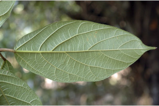
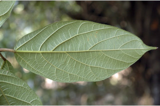
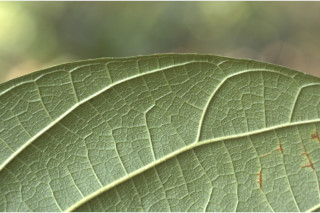
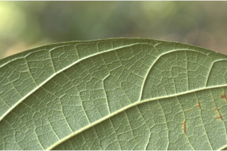

Shrubs to medium sized trees, up to 10 m tall.
10 ಮೀ. ಎತ್ತರದವರೆಗಿನ ಪೊದೆಗಳು ಅಥವಾ ಮಧ್ಯಮ ಗಾತ್ರದ ಮರಗಳು.
Shrubs to medium sized trees, up to 10 m tall.
பெரிய குத்துச்செடி முதல் சிறிய மரம், 10 மீ. உயரம் வரை வளரக்கூடியது.
Bark brownish, lenticellate; blaze pink.
ತೊಗಟೆ ಕಂದು ಬಣ್ಣದಲ್ಲಿದ್ದು ಸೂಕ್ಷ್ಮ ವಾಯು ವಿನಿಮಯ ಬೆಂಡು ರಂಧ್ರಗಳ ಸಮೇತವಿರುತ್ತದೆ; ಕಚ್ಚು ಮಾಡಿದ ಜಾಗ ನಸುಗೆಂಪಾಗಿರುತ್ತದೆ.
Bark brownish, lenticellate; blaze pink.
மரத்தின் பட்டை ப்ரவுன் நிறமானது, பட்டைத்துளைகள் (லெண்டிசெல்லேட்) உடையது; உள்பட்டை பிங்க் நிறமானது.
Branchlets terete, with hollow internodes, densely hispid with brown or grey hairs, lenticellate.
ಕಿರುಕೊಂಬೆಗಳು ದುಂಡಾಗಿದ್ದು ಟೊಳ್ಳಾಗಿರುವ ಅಂತರ ಗಿಣ್ಣನ್ನು ಹೊಂದಿರುತ್ತವೆ ಹಾಗೂ ಕಂದು ಅಥವಾ ಬೂದು ಬಣ್ಣದ ಬಿರುಗೂದಲುಗಳಿಂದ ದಟ್ಟವಾಗಿ ಆವೃತಗೊಂಡಿರುತ್ತವೆ ಮತ್ತು ಸೂಕ್ಷ್ಮ ವಾಯು ವಿನಿಮಯ ಬೆಂಡು ರಂಧ್ರಗಳ ಸಮೇತವಿರುತ್ತದೆ.
Branchlets terete, with hollow internodes, densely hispid with brown or grey hairs, lenticellate.
சிறியநுனிக்கிளைகள் குறுக்குவெட்டுத் தோற்றத்தில் வளையமானது, கணுவிக்கிற்கு இடைப்பட்ட பகுதி குறுக்குவெட்டுத் தோற்றத்தில் துளையுடையது, அடர்த்தியாக ப்ரவுன் நிறமான அல்லது சாம்பல் நிறமான உரோமங்களுடையது, பட்டைத்துளைகள் (லெண்டிசெல்லேட்) உடையது.
Latex creamy white, profuse.
ಜಿನುಗು ದ್ರವ ಕೆನೆ ಬಿಳಿಯ ಬಣ್ಣ ಹೊಂದಿದ್ದು ವಿಫುಲವಾಗಿರುತ್ತದೆ.
Latex creamy white, profuse.
சாறு கிரீம்-வெள்ளை நிறமானது, வெட்டுபட்ட பட்டையிலிருந்து அதிகளவு சுரக்கிறது.
Leaves simple, opposite, decussate; stipules to 2.5 x 1 cm, caducous, leaving annular scar; petiole 1-10 cm long, canaliculate, hispid; lamina 7-35 x3-16 (40 x 18 cm in saplings), elliptic-oblong, narrow ovate, narrow obovate, apex caudate - acuminate, base rounded subcordate or truncate - subcordate, margin entire or dentate sometimes irregularly toothed, scabrid on both surface, hispid beneath; midrib slightly raised above; 3-nerved at base; secondary_nerves 4-9 pairs, often branched, ascending; tertiary_nerves broadly reticulo-percurrent.
ಎಲೆಗಳು ಸರಳವಾಗಿದ್ದು ಕತ್ತರಿಯಾಕಾರದ ಅಭಿಮುಖ ಜೋಡನಾ ವ್ಯವಸ್ಥೆಯಲ್ಲಿರುತ್ತವೆ; ಕಾವಿನೆಲೆಗಳು 2.5 X 1 ಸೆಂ.ಮೀ. ಉದ್ದ ಹೊಂದಿದ್ದು ವಲಯಾಕಾರದ ಗುರುತುಗಳನ್ನುಳಿಸಿ ಉದುರಿ ಹೋಗುತ್ತವೆ;ತೊಟ್ಟುಗಳು 1 – 10 ಸೆಂ.ಮೀ. ಉದ್ದ ಹೊಂದಿದ್ದು ಕಾಲುವೆಗೆರೆ ಸಮೇತವಾಗಿರುತ್ತವೆ ಮತ್ತು ಬಿರುಗೂದಲುಗಳಿಂದ ಆವೃತವಾಗಿರುತ್ತವೆ;ಪತ್ರಗಳು 7– 35 X 3 – 16 ಸೆಂ.ಮೀ. (ಸಸಿಗಳಲ್ಲಿ 40 X18 ಸೆಂ.ಮೀ.)ಗಾತ್ರವಿದ್ದು ಅಂಡವೃತ್ತ- ಚತುರಸ್ರ,ಸಂಕುಚಿತ ಅಂಡ,ಸಂಕುಚಿತ ಬುಗುರಿಯ ಆಕಾರ ಹೊಂದಿದ್ದು, ಬಾಲರೂಪಿ - ಕ್ರಮೇಣ ಚೂಪಾಗುವ ತುದಿ, ದುಂಡಾದ ಅಥವಾ ಉಪ-ಹೃದಯಾಕಾರದ ಅಥವಾ ಛಿನ್ನಾಗ್ರ - ಉಪ-ಹೃದಯಾಕಾರದ ಬುಡ, ನಯವಾದ ಅಥವಾ ದಂತಿತವಾದ ಕೆಲವು ವೇಳೆ ಅನಿಯತವಾಗಿ ದಂತಿತಗೊಂಡ ಅಂಚು ಹೊಂದಿರುತ್ತವೆ, ಪತ್ರಗಳ ಎರಡೂ ಬದಿಗಳು ಒರಟು ರೋಮಗಳಿಂದ ಕೂಡಿರುತ್ತವೆ; ಮಧ್ಯ ನಾಳ ಮೇಲ್ಭಾಗದಲ್ಲಿ ಕೊಂಚ ಮೇಲೆದ್ದಿರುತ್ತದೆ ಪತ್ರಗಳ ಬುಡದಲ್ಲಿ 3 ಆಧಾರ ನಾಳಗಳಿರುತ್ತವೆ; ; ಎರಡನೇ ದರ್ಜೆಯ ನಾಳಗಳು 4- 9 ಜೋಡಿಗಳಿದ್ದು ಸಾಮಾನ್ಯವಾಗಿ ಕವಲುಗೊಂಡಿರುತ್ತವೆ ಮತ್ತು ಆರೋಹಣ ಮಾದರಿಯಲ್ಲಿರುತ್ತವೆ;ಮೂರನೇ ದರ್ಜೆಯ ನಾಳಗಳು ವಿಶಾಲ ಜಾಲ ಬಂಧ ನಾಳ ವಿನ್ಯಾಸದಲ್ಲಿದ್ದು ಎಲೆದಿಂಡಿಗೆ ಅಡ್ಡವಾಗಿ ಕೂಡುತ್ತವೆ.
Leaves simple, opposite, decussate; stipules to 2.5 x 1 cm, caducous, leaving annular scar; petiole 1-10 cm long, canaliculate, hispid; lamina 7-35 x3-16 (40 x 18 cm in saplings), elliptic-oblong, narrow ovate, narrow obovate, apex caudate - acuminate, base rounded subcordate or truncate - subcordate, margin entire or dentate sometimes irregularly toothed, scabrid on both surface, hispid beneath; midrib slightly raised above; 3-nerved at base; secondary_nerves 4-9 pairs, often branched, ascending; tertiary_nerves broadly reticulo-percurrent.
இலைகள் தனித்தவை, எதிரடுக்கமானவை, குறுக்குமறுக்கானவை; இலையடிச்செதில் 2.5 X 1 செ.மீ., எளிதில் உதிரக்கூடியது மற்றும் வட்டவடுக்களை ஏற்படுத்துகின்றன; இலைக்காம்பு 1-10 செ.மீ. நீளமானது, குறுக்குவெட்டுத் தோற்றத்தில் கேனாலிகுலேட், உரோமங்களுடையது; இலை அலகு 7-35 ´3-16 (இளம்பருவத்தில் 40 X 18 செ.மீ.), நீள்வட்ட -நீள்சதுர வடிவானது, குறுகிய முட்டை வடிவானது, குறுகிய தலைகீழ் முட்டை வடிவானது, அலகின் நுனி வால்-அதிக்கூரியது, அலகின் தளம் வட்டமானது சிறிய இதய வடிவானது அல்லது சதுர-சிறிய இதய வடிவானது, அலகின் விளிம்பு முழுமையானது அல்லது பற்களுடையது சிலசமயங்களில் ஒழுங்கற்ற பற்களுடையது,அலகின் மேற்பரப்பு மற்றும் கீழ்பரப்பு சொரசொரப்பானது, கீழ்பரப்பு உரோமங்களுடையது; மையநரம்பு மேற்புறத்தில் அலகின் பரப்பைவிட சிறிது உயர்ந்து இருக்கும்; 3 நரம்புகளை தளத்திலே உடையது; இரண்டாம் நிலை நரம்புகள் 4-9 ஜோடிகள், பொரும்பாலும் கிளைத்தவை, நுனி நோக்கி வளைந்தவை; மூன்றாம் நிலை நரம்புகள் அகன்ற வலைப்பின்னல்-பெர்க்கரண்ட் அமைப்பு கொண்டது.
Inflorescence syconia, clustered on tubercles of main trunk, older branches and sometimes on pendulous leafless branches; flowers unisexual.
ಪುಷ್ಪಮಂಜರಿಗಳು ಸೈಕೋನಿಯ ರೀತಿಯವುಗಳಾಗಿದ್ದು ಮುಖ್ಯ ಕಾಂಡ,ಹಳೆಯ ಕೊಂಬೆಗಳಲ್ಲಿನ ಗುಬುಟುಗಳ ಮೇಲಿನ ಗುಛ್ಛಗಳಲ್ಲಿರುತ್ತವೆ ಮತ್ತು ಕೆಲವು ವೇಳೆ ತೂಗಾಡುವ ಎಲೆರಹಿತ ಕೊಂಬೆಗಳ ಮೇಲಿರುತ್ತವೆ;ಹೂಗಳು ಏಕ ಲಿಂಗಿಗಳು.
Inflorescence syconia, clustered on tubercles of main trunk, older branches and sometimes on pendulous leafless branches; flowers unisexual.
மஞ்சரி சைகோனியம், தொகுப்பாக மரத்தண்டிலுள்ள கழலைகள் மேல் அல்லது தெங்கிய இலைகளற்ற கிளைகள் மற்றும் முதிர்ந்த கிளைகளில் தோன்றுபவை; மலர்கள் ஓர் பாலானவை.
Syconium, globose, up to 2.5 cm across.
ಸೈಕೋನಿಯ (ಸಂಯುಕ್ತ ಫಲ) ಗೋಳಾಕಾರದಲ್ಲಿದ್ದು 2.5 ಸೆಂ.ಮೀ.ವರೆಗಿನ ಅಡ್ಡಗಲತೆಯನ್ನು ಹೊಂದಿರುತ್ತದೆ.
Syconium, globose, up to 2.5 cm across.
சைகோனியம், கோளவடிவானது, 2.5 செ.மீ. குறுக்களவுடையது.

 

 
